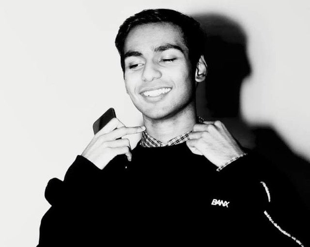
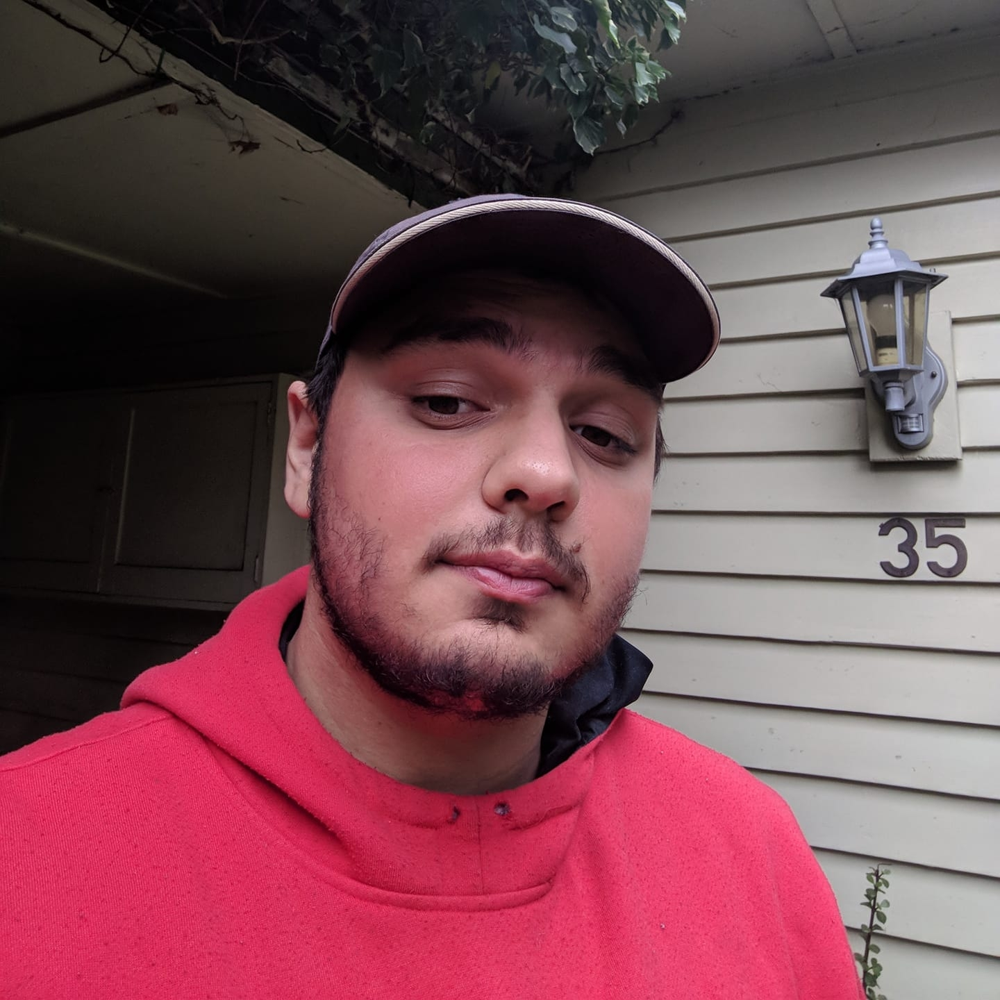
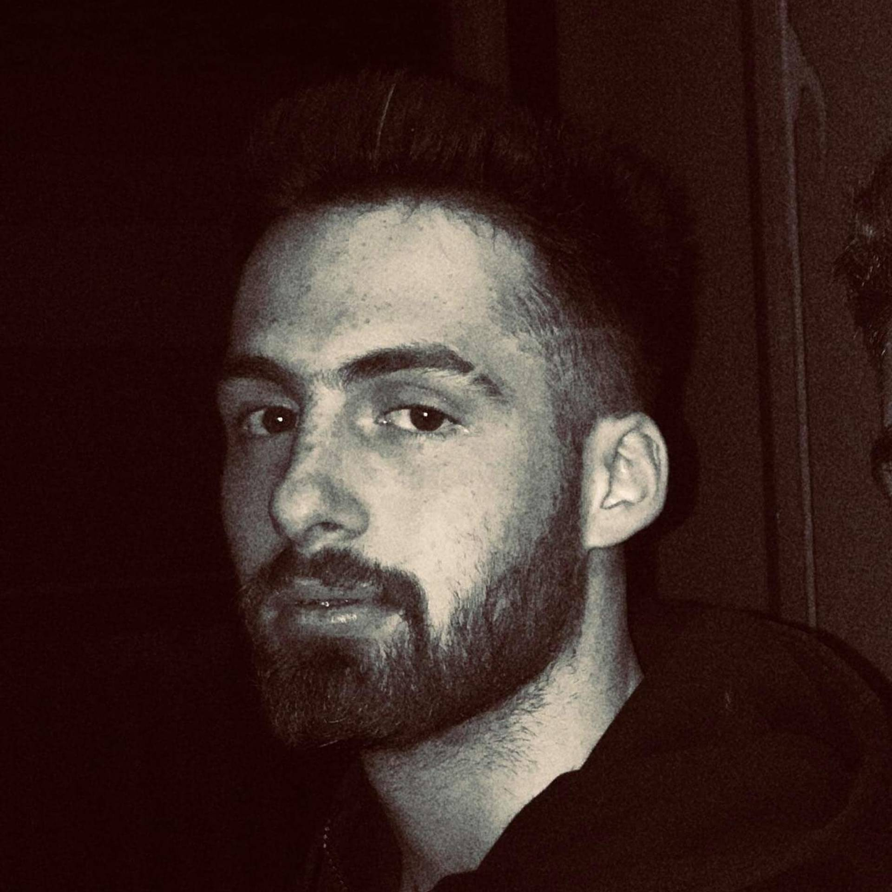

Hamish Prasad, Jack Abdo, Richard Saville, Matt Robinson
Personal Information
_____________

_
Jack Abdo (S3907636): I'm 21 years of age, and I grew up around computers for most of my life. My dad was a full time IT consultant when I was growing up; and the major concept I spoke about in My Profile was an open world RPG that incorporated decisions made by the user during the game that affected the outcome overall, in other words every user would have a different ending to the same game and I believe it captures a gap in the market where gaming is concerned. Similarly this is where my interest in IT has flourished and in turn my desired career path is a front end games developer, certainly not an easy goal to live up to. Outside of that my hobby centres around the sport of basketball as a referee coach and player.

_
My name is Matt, I am a 31-year-old Payroll Systems administrator from Melbourne. Originally from New Zealand, I relocated to Australia in early 2014 to further my career. My Favorite pastime, Pre-Pandemic, was travelling. I have spent significant amounts of time in South East Asia and Europe, my favourite destination being an island in Cambodia called Koh Rong. My other hobbies include playing Grand Strategy games (Mostly Paradox Interactive games), Amateur astronomy, and more recently attempting to learn Spanish. My interest in IT has been spurred on by my current job where I discovered programming by mistake when playing around with VBA in Excel. In the last two years, I have continued to build on my knowledge of programming and have managed to create some automation tools to assist the team and myself with our daily activities. I have taught myself how to use other Microsoft applications including Power BI, and XML in order to implement data manipulations, creating reports and visuals with large data sets. All of this has led me to pursue this degree to solidify what I have taught myself and obtain new skills in programming and database concepts. Through this degree, I also hope to broaden my horizons and discover opportunities within the It industry that I have not yet been exposed to.
Hamish Prasad (S3907637) I am currently 21 years of age. I studied at Parramatta Marist High School, graduating in 2017, before going onto study a Bachelor of Applied Science (Diagnostic Radiography) at the University of Sydney until 2020. During this time I’d also pursued a career as an electronic musician, based primarily in Los Angeles until the pandemic. The advent of my interest in IT came whilst studying Diagnostic Radiography, as I grew a fascination towards the ways in which crucial mass data sets relating to a plethora of patients were handled efficiently. The introduction of the Raspberry Pi also furthered my interest in IT, as it provided tinkerers with a compact, bare-bones computer that could efficiently run most Linux distributions opening a virtually limitless world within the innovation sector, from small scale home-based devices to industrial applications.

Richard Saville (S3903627): I am 23 years of age; at a young age I took interest in computers by pulling them apart and experimenting by putting different parts into different computers. When I was in my teens, I had an accident when riding motocross that caused me to be immobile for a time, during this I found a passion for technology that eventually grew into a passion for programming; I am now proud to say I have a good understanding of almost all major programming languages. One of my biggest accomplishments with programming is writing the code for the biggest OCE Roleplay Server on FiveM, this experience really taught me a lot about how to deal with and/or what kind of problems you run into during production, from code errors to database maintenance. My main hobby besides programming is guitar, I have been playing for about 12 years now and still play every day; I also plan on one day getting back into Motocross as it is something I grew up doing.
Personality Traits
___________
Hamish Prasad: The Myers-Briggs test renders me a Virtuoso, with a natural interest in problem solving and developing new innovations. I find great joy in trouble shooting and first hand experience, however I am a reserved individual who may struggle being assertive in collaborative scenarios. The online learning test I conducted indicates that I am an Aural learner, finding that I can most efficiently comprehend/analyse information that is presented in an aural format, however may find difficulty in presenting my own ideas aurally. Within the analytical reasoning test I completed I scored a 90%, with the average score being 68%, thus indicating that whilst I may be competent in seeking out solutions to problems analytically, I may succumb to time and communication related pressures. Within a group setting, I would effectively be able to compare and consolidate ideas presented by different members, with a very direct approach towards the criteria that need to be met. Although I may stray away from leadership roles, I intend to challenge myself to take initiative to ensure that all objectives are fulfilled thoroughly, whilst allowing members to share their own insights, improvements and suggestions.
Richard Saville: My Myer-Briggs test has come back as an Adventurer, after reading up on this personality type it has honestly shocked me to how much I related to it. The strengths and weaknesses seemed very revealing to me, it told me how I get easily stressed over stuff that usually is not an issue but also when I get interested or involved into a subject I get fully invested and give it my all. In my Learning Style test, it has indicated that I am an Auditory learner, “you learn by hearing and listening” is quoted from the results. I think this is very true to myself as I tend to learn a lot better from listening, but personally I feel I learn better from examples. In my creativity test results it says I have a high complexity and paradox, which means that I can hold a lot of information and be able to work with information that is contradictory; I have a low boldness which means I tend to stick to the norm, and I tend to take on board what others think of me. Personally, I disagree with sticking to the norm as in my experience working on projects, I tend to want to experiment with alternative methods to yield better results.
Jack Abdo: After receiving the Myers-Briggs Test results I felt I had learned a lot more about myself, being identified as someone with a Campaigner ENFP personality which paints me as someone who is very individualistic but also can adapt well to social situations and makes this personality type an excellent communicator. While there are many strengths to this personality some weaknesses can be struggling with consistency, meaning that I’m more likely to lose interest in the day to day operations of a task as it becomes a set routine, similarly my individuality can go too far to a fault where I will not enjoy being micromanaged and kept within guideline upon guideline. The VARK questionnaire proved that I prefer a mixture of Aural and Kinesthetic learning types which made up for 17/21 of my answers from the multiple choice selections, this would mean that someone like me prefers to experience learning in real life such as talking, discussing, listening, questioning, practical exercises, examples, case studies and trial and error. Finally after completing the Big Five Personality Test I found that I scored high in the tier 1 portion of the marking, making me likely to be a socially positive and outgoing person. More specifically I scored the highest in the Intellect/Imagination with an 84 closely followed by Extroversion with 83 both out of 100, I also scored the lowest in Conscientiousness at 41, which is also followed by the second lowest category Agreeableness at 45 both below 50.
Matt Robinson: My Myers-Briggs test result indicated that I was an Assertive Advocate, with a vivid imagination and creative streak coupled with an ability to be insightful ‘typically striving to move past appearances’ however it also indicated I may be a perfectionist who is prone to burnout and who can be easily become exhausted if not able t find the right workload balance. My Learning styles test, Honey and Mumford, indicated that in the majority I was more inclined to the reflector learning style. Standing back to observe and “to collect and analyse information to help them reach their conclusions”. My final test, which was the Character Test - VIA Institute on Character, indicated that my top trait was honesty advising that I presented myself as genuine and act in a sincere way without pretence. As to how this will be helpful to the team, I believe that it will give all team members a starting point in which to approach conversations and tasks with me giving them a basic understanding of the character traits I possess.
________________________________________
Conclusion
Information regarding the personality types and learning styles of each of our team members can be deemed extremely valuable to us in the sense that it provides valuable insights into each of our strengths, weaknesses and mindsets. This will in turn will assist us in delegating tasks, ensuring that team members are assigned facets of the project that best fit their interests and capabilities. This knowledge will also aid communication, as members will have a brief understanding of each other's sentiments toward how the project can be executed efficiently and effectively, fostering an environment that facilitates the expression of creative ideas, within the boundaries of what is feasible given the rubric.
Ideal Jobs
______________________________________
Team Member
Job Description
Comparison
Hamish Prasad
Cloud Engineer: This position requires an individual with efficient and effective high level problem solving skills, interpersonal leadership qualities, and fluency in Cloud Engineering protocol. Skill-wise, this position requires comprehensive knowledge of network monitoring tools such as SCOM, PRTG and Nagios, as well as fluency with VoIP.
This position bears similarities to the chosen fields of both Abdo and Saville in that it requires a particular honed set of programming skills and an affinity for problem solving. The value of this understanding lies in the potential for differing perspectives to be shared regarding how problems can be troubleshooted and dilemmas concerning the inner workings of our project to be rectified.
Jack Abdo
Games Developer: When hiring a front end games developer first and foremost, employers are looking for someone with a Bachelor’s Degree in Software Engineering/Computer Science and who is well versed in the C++ programming language. Preferably a candidate must be familiar with new age consoles such as the PS4 and Xbox One, having to know the basic speed and memory requirements for each. Additionally they are looking for an enthusiasm about playing and making games, a certain level of adaptability, problem solving and an appetite for communication and organization (attention to detail).
Pursuing game development requires individuals who are not only skilled in programming, but creatively equipped in a manner which enables them to seek out effective ways of fulfilling the stipulated project criteria. Given that this field is more passion driven than those chosen by the rest of the group members, Abdo’s presence in our group will ensure adaptability of not only our project idea, but the means through which such ideas are expressed, given the varying perspectives brought forth by each member. Communication is paramount to the completion of any collaborative effort, thus Abdo’s organisational skills and appetite for group transparency will come of great aid.
Richard Saville
Software Engineer: Being a Software Engineer requires you to have good problem-solving skills, understanding of many programming languages most commonly; Java and C# as well as having a solid understanding of Database Languages such as SQL as well as Rest API’s. My hope is to continue my education so I can work towards a position such as this.
This field requires individuals who are highly skilled in a plethora of programming languages. Skill wise, it is loosely analogous to the chosen fields of both Prasad and Abdo given that it requires an affinity for both small and large scale problem solving. Thus in a collaborative effort, Saville would be expected to closely monitor any potential bugs and dilemmas that may arise, whilst ensuring that the code utilized meets all set criteria in an efficient manner